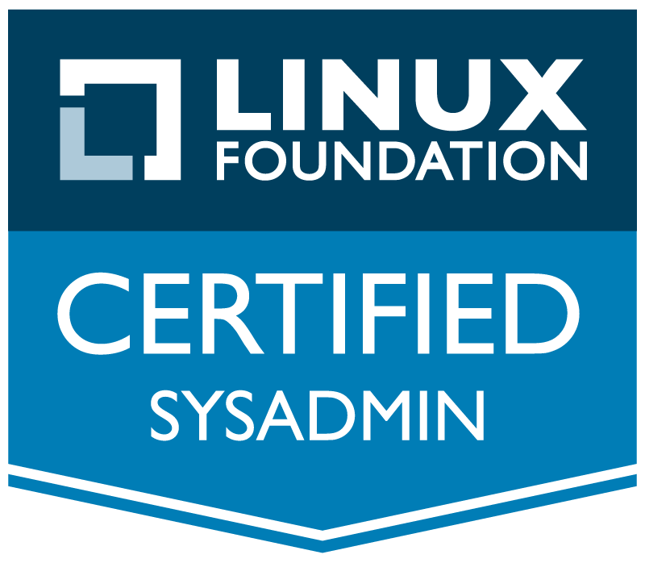

|
|  |
To obtain the position of Linux System Administrator where I can apply my experience obtained in the last five years working with Linux and certified by Linux Foundation, my linguistic skills (especially English), together with my negotiation ability consolidated in the last ten years of consulting and mediating in the insurance industry, to provide your clients a high quality experience. Also I look forward to become integrated in an dynamic environment that can help refine my knowledge
Bachelor of Science in Economics, Speciality International Transactions
"Dunarea de Jos" University Galati, Romania. 2001
Linux Foundation Certified System Administrator. December 2015.
Course : LFS201 Essentials of System Administration. linuxfoundation.org sep-nov 2015
Linux Foundation Certified System Administrator
Operating systems: Linux (CentOS 6.x, 7.x; Red Hat 6.x, 7.x; Fedora)
Network and Protocols: LAN/WAN, TCP/IP, VPN
Software: Virtualization (Virtual Machine Manager, Virtual Box), Telnet, SSH, FTP
Markup lenguajes: basic html and css
Scripting: bash
| English: | Advanced (reading and writing) |
| Spanish: | Intermediate (reading and writing) |
| French: | Intermediate (reading and writing) |
| Italian: | Elementary (reading and writing) | Roumanian: | Mother tongue |
2010 - 2015
In my own company, Neobroker Broker de Asigurare S.R.L., I was fulfilling the tasks that normally an IT department would have done:
2005 -2015
Owner and CEO of an insurance broker company, Neobroker Broker de Asigurare S.R.L., with the main tasks of customers management and planning an efficient workflow for the sales team